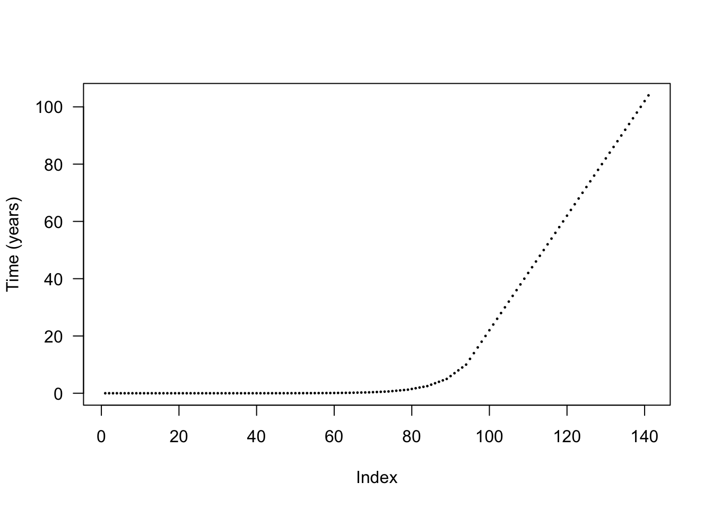
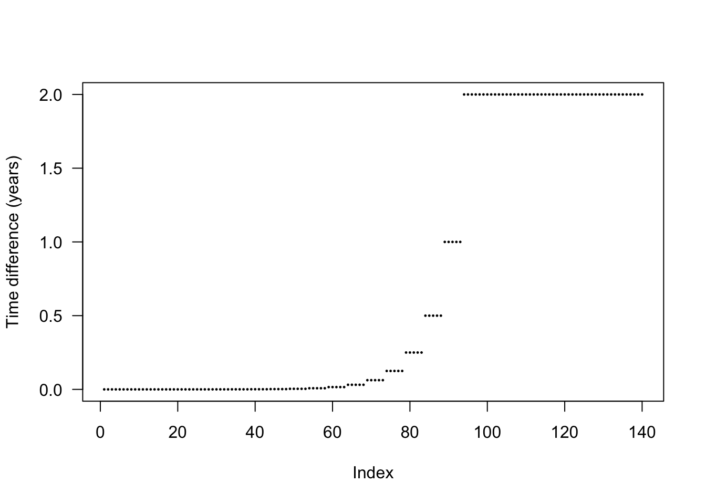
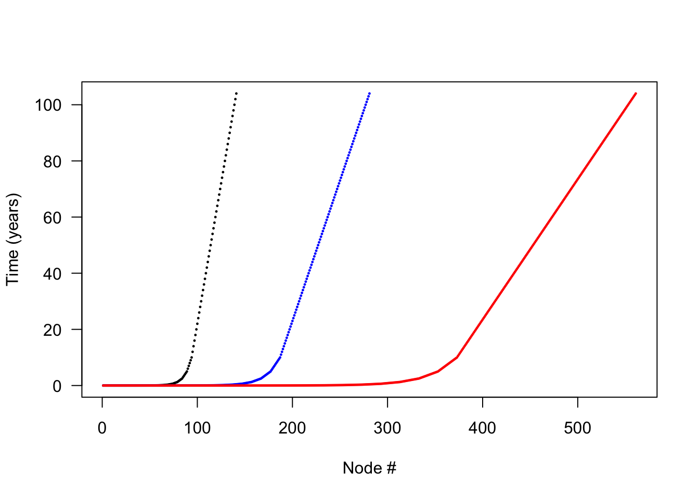
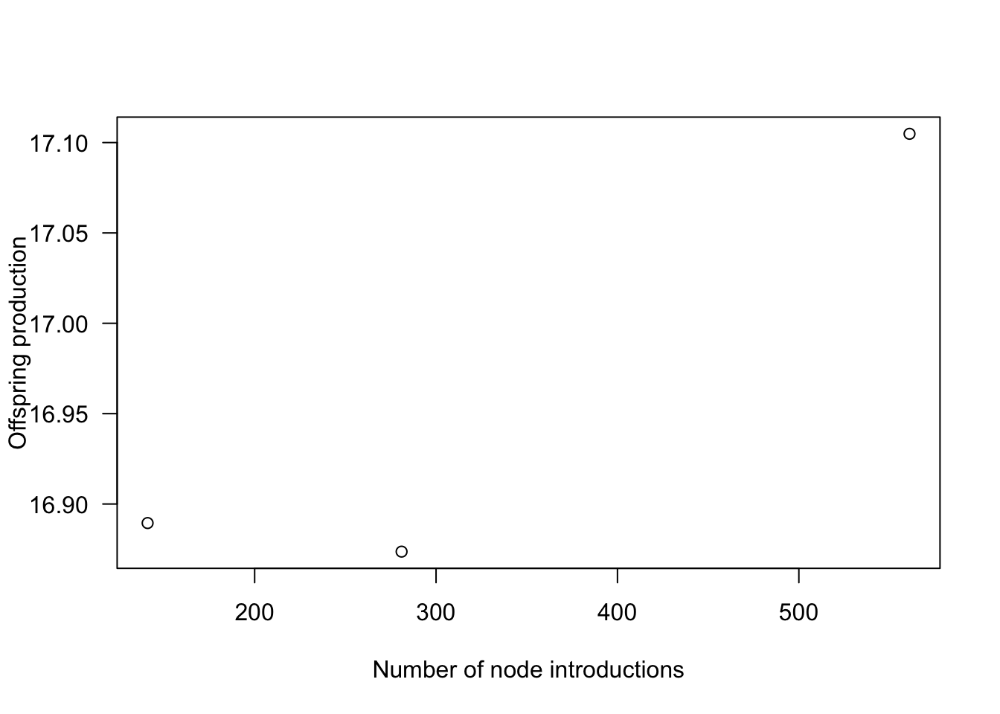
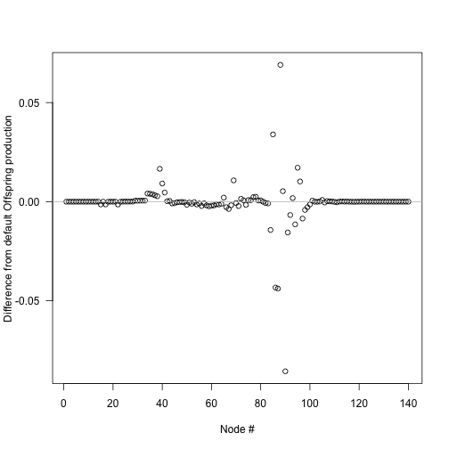
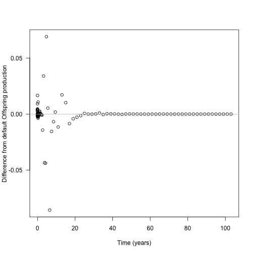
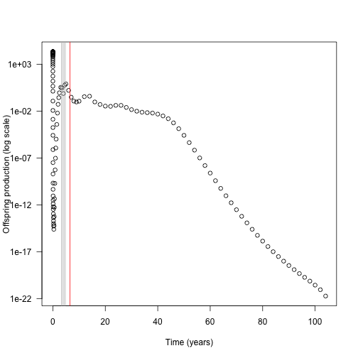
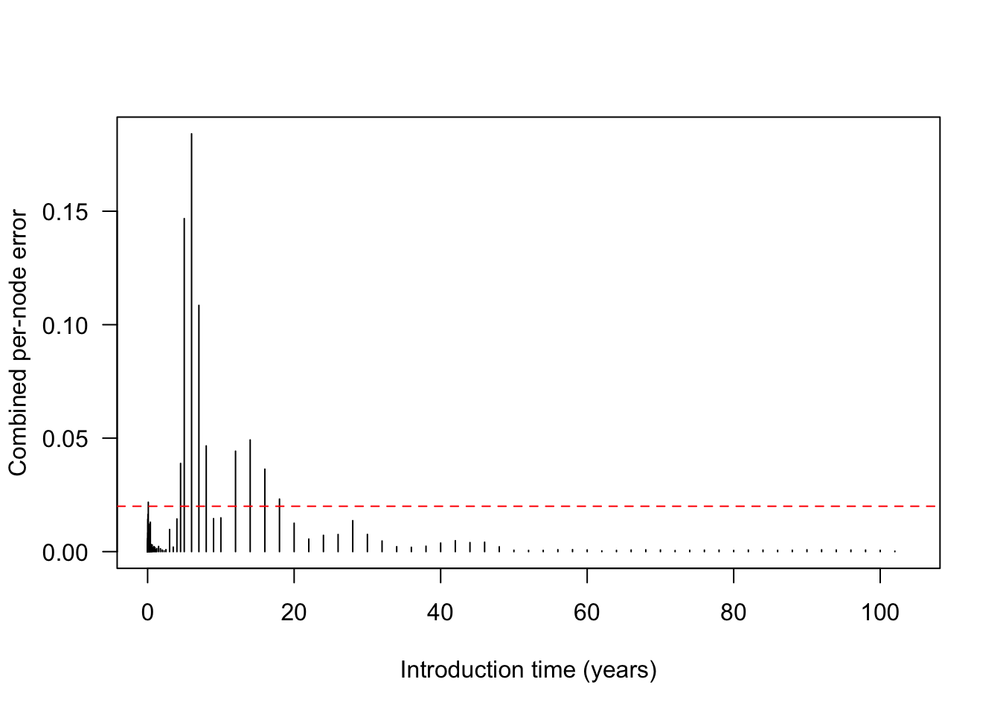
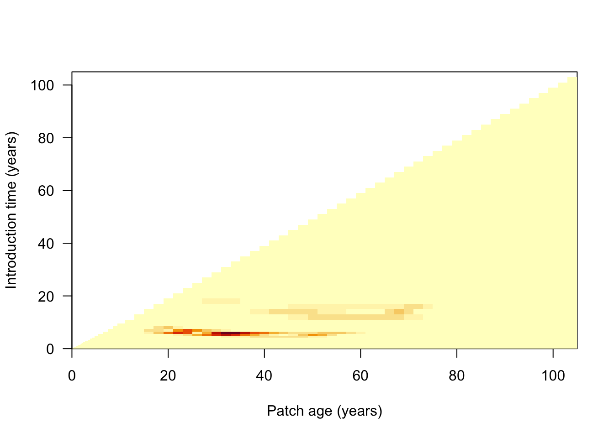
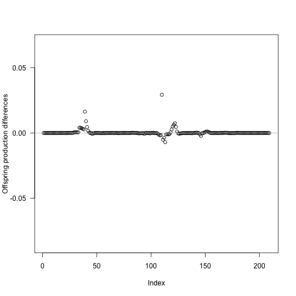

library(plant)
library(parallel)
ncores <- detectCores() - 1
p0 <- scm_base_parameters("FF16")
p <- add_strategies(p0, trait_matrix(0.0825, "lma"), birth_rate = 20)
times_default <- p$node_schedule_times[[1]]The node-spacing algorithm
implementation
NotePrerequisites
This page builds on The size-structured PDE and the method of characteristics. Read those first if the notation here is unfamiliar.
The idea first
plant never tracks a continuous size distribution directly. Instead, it uses a finite collection of cohorts. Each cohort contains one representative individual that stands in for all plants born at roughly the same time. As the cohorts grow and thin, the model must decide when to add a new one and how to space them so that the collection still represents the size distribution faithfully.
This creates a genuine trade-off. Too few or too widely spaced cohorts smooth over population structure that matters for growth and competition. Too many cohorts spend computation refining parts of the distribution that were already accurate enough. The node-spacing algorithm aims to use the smallest set that keeps approximation error below a chosen tolerance throughout patch development.
The rest of this page makes this precise.
Background
As explained on The size-structured PDE, the SCM replaces a continuous size distribution with discrete nodes. Integrals over the size distribution are therefore approximations, and their accuracy depends on how closely those nodes are spaced. An ordinary run uses its supplied schedule. You can opt in to adaptive refinement when you need a chosen accuracy without adding nodes that contribute little useful information.
The algorithm begins with a schedule of node introduction times. For each node, it asks a practical question: if this node were removed, would either of two important population integrals become too inaccurate? The allowable relative error is set by schedule_eps. The solver performs this test throughout patch development, inserts a new node just before any interval that fails, and then simulates the patch again. It repeats the cycle until both integrals remain within the tolerance at every time point.
A smaller schedule_eps requires greater accuracy and usually leads to more nodes. The test is deliberately conservative: it measures the error caused by removing an existing node, then responds by adding another node nearby. The error in the final, refined schedule will therefore usually be below the stated tolerance.
This optional refinement now lives entirely in C++, inside the SCM solver. run_scm() does not refine the schedule by default (refine_schedule = FALSE); request it from R with:
scm <- run_scm(p, refine_schedule = TRUE)
p_refined <- scm$parametersrun_scm(refine_schedule = TRUE) calls SCM::refine_schedule(), which runs the solver, collects the per-node integration error as the patch develops, splits the flagged intervals, and repeats. The refined schedule and the ODE times of the final run are written back into the returned parameters, so the Parameters object remains self-describing. (Earlier versions of plant did this work in R via the build_schedule() and run_scm_error() functions; both have been removed in favour of the in-solver implementation.)
Most users can use the supplied schedule. The examples below show readers who opt in to refinement how the SCM chooses its nodes and how that choice affects numerical accuracy. Some examples inspect non-exported plant internals, which is why they use the plant::: prefix. Those interfaces are implementation details rather than part of the stable user API.
Node introduction times
The default schedule places introductions more densely early in patch development. This pattern reflects empirical experience with where refinement is most often needed:
plot(times_default, cex=.2, pch=19, ylab="Time (years)", las=1)
The gaps between introduction times change in steps rather than continuously. This makes it more likely that different species introduce nodes at the same time, allowing the solver to update them together and reducing the total work.
plot(diff(times_default), pch=19, cex=.2, ylab="Time difference (years)", las=1)
Estimating error in node spacing
One way to assess the effect of node spacing is to compare cumulative offspring production across schedules. This is a useful diagnostic because offspring production integrates individual performance over the development of the patch.
More nodes should improve integration accuracy, but they also require more computation. To make that trade-off visible, we create finer schedules by inserting a midpoint between every pair of existing introduction times:
interleave <- function(x) {
n <- length(x)
xp <- c(x[-n] + diff(x) / 2, NA)
c(rbind(x, xp))[- 2 * n]
}
times_2x <- interleave(times_default)
times_4x <- interleave(times_2x)
plot(times_default, xlab = "Node #", ylab="Time (years)",
xlim = c(1, length(times_4x)), las=1, pch = 19, cex=.2,)
points(times_2x, pch=19, cex=.2, las=1, col = "blue")
points(times_4x, pch=19, cex=.2, las=1, col = "red")
All three schedules cover the same duration, but times_2x has roughly twice as many nodes as the default and times_4x has roughly four times as many. We run the same patch with each schedule and compare its propagule output:
run_with_times <- function(p, t) {
p$node_schedule_times[[1]] <- t
start <- Sys.time()
offspring_production <- run_scm(p)$offspring_production
print(paste("Time to solve:", round(Sys.time() - start, 2)))
return(offspring_production)
}
offspring_production_default <- run_with_times(p, times_default)[1] "Time to solve: 0.16"offspring_production_2x <- run_with_times(p, times_2x)[1] "Time to solve: 0.28"offspring_production_4x <- run_with_times(p, times_4x)[1] "Time to solve: 0.85"node_range <- c(length(times_default), length(times_2x),
length(times_4x))
offspring_production_range <- c(offspring_production_default, offspring_production_2x,
offspring_production_4x)In this example, quadrupling the number of nodes increases runtime by nearly a factor of six. Using eight times as many nodes takes roughly 26 times as long (not shown). The cost therefore rises much faster than the number of nodes.
plot(x = node_range, y = offspring_production_range,
xlab="Number of node introductions", ylab="Offspring production", las=1)
Estimated offspring production rises as the schedule becomes finer, but the curve begins to level off. Each additional round of refinement therefore buys less improvement than the previous one.
The total difference in offspring production is modest—about 1% in this example. The more important warning sign is that adding a node at some specific positions can produce irregular changes in the result. Those local instabilities motivate the adaptive refinement procedure.
Individual offspring production contributions
Why does changing the schedule alter offspring production? To locate the source of the difference, we add one node at a time to the default schedule. For each possible insertion interval, we rerun the model and record the change in total offspring production.
The next chunk runs the solver once per insertion position in parallel via mclapply. It is a heavy computation, so we mark it #| eval: false and show the pre-rendered figure below; the helper definitions are retained for reference.
insert_time <- function(i, x) {
j <- seq_len(i)
c(x[j], (x[i] + x[i+1])/2, x[-j])
}
run_with_insert <- function(i, p, t) {
run_with_times(p, insert_time(i, t))
}
insert_positions <- seq_len(length(times_default) - 1)
offspring_productions <- unlist(mclapply(insert_positions, run_with_insert,
p, times_default, mc.cores = ncores))
offspring_production_differences <- offspring_productions - offspring_production_default
plot(insert_positions, offspring_production_differences,
xlab="Node #", ylab="Difference from default Offspring production", las=1)
abline(h=0, col="grey")
The largest changes occur around the middle of the node sequence. Because the default schedule packs many nodes into the early years, however, the corresponding introductions still occur fairly early in patch development.
The next chunk just replots the differences computed above against time, so it is also marked #| eval: false and shown as a pre-rendered figure.
times_interpolated <- (times_default[-1L] +
times_default[-length(times_default)]) / 2
plot(times_interpolated, offspring_production_differences,
xlab="Time (years)", ylab="Difference from default Offspring production", las=1)
abline(h=0, col="grey")
We can now ask whether those sensitive insertion points coincide with nodes that produce many offspring. The next plot shows each node’s contribution to the overall patch output on a logarithmic scale.
The ODE accumulates lifetime offspring production separately for each node and exposes it through the species’ net_reproduction_ratio_by_node. This value is the node’s unweighted contribution. When the SCM calculates overall fitness, it also weights contributions by patch-age density and survival during dispersal.
This chunk depends on times_interpolated, top_5 and offspring_production_differences produced by the parallel chunks above, so it is shown as a pre-rendered figure rather than executed.
default <- run_scm(p)
contributions <- default$patch$species[[1]]$net_reproduction_ratio_by_node
top_5 <- order(abs(offspring_production_differences), decreasing=TRUE)[1:5]
# drop the first node (zero contribution) to avoid log(0)
keep <- contributions > 0
plot(times_default[keep], contributions[keep], log = "y",
xlab="Time (years)", ylab="Offspring production (log scale)", las=1)
abline(v=times_interpolated[top_5], col=c("red", rep("grey", 4)))
Almost all offspring production in this example comes from early nodes, as we would expect for what is essentially a single-age stand of pioneers. The vertical lines mark the five insertion points that caused the largest changes in total offspring production, with the most influential shown in red.
These sensitive positions do not correspond to nodes that themselves produce many offspring: their direct contributions are close to zero, although still slightly higher than those of nearby nodes. The schedule must therefore be affecting the result through another pathway.
Individual competitive impacts
If the inserted nodes are not changing offspring production through their own direct contribution, they may instead be changing the performance of nearby nodes through competition.
To test that idea, we compare the patch light environment with and without the single extra node that produced the largest change in seed output above.
First we run patches with and without the extra node, collecting the complete set of patch conditions at each timestep with run_scm(collect = TRUE).
This chunk depends on top_5 and insert_time() from the parallel analysis above, so it is shown but not executed.
collect_with_times <- function(p, t) {
p$node_schedule_times[[1]] <- t
result <- run_scm(p, collect = TRUE)
return(result)
}
insert_position <- top_5[1]
times_insert <- insert_time(insert_position, times_default)
results_default <- collect_with_times(p, times_default)
results_insert <- collect_with_times(p, times_insert)For a direct comparison, both runs must be evaluated at the same heights and times. We reconstruct each run’s light-environment spline and use it to calculate light availability on a common height grid:
interpolated_light_availability <- function(env, heights) {
# intialise new spline with existing values
spline <- plant:::Interpolator()
spline$init(env[, 1], env[, 2])
# subset to valid heights in patch
patch_heights <- heights < spline$max
# evaluate over list of heights and zero
y <- spline$eval(heights)
y[!patch_heights] = 0
return(y)
}
n = length(results_default$time)
max_height <- max(results_default$env[[n]][, 1],
results_insert$env[[n+1]][, 1])
heights <- seq(0, max_height, length.out=201)
light_availability_spline_default <- sapply(results_default$env, interpolated_light_availability, heights)
light_availability_spline_insert <- sapply(results_insert$env, interpolated_light_availability, heights)
light_availability_spline_difference <- t(light_availability_spline_insert[, -(insert_position + 1)] - canopy_default)
light_availability_spline_difference[abs(light_availability_spline_difference) < 1e-10] <- NAWe then subtract the default light environment from the refined one at every height and time. Blue regions in the image indicate more available light after the node was added; red regions indicate less available light.
This image plot depends on the snapshots collected above, so it is shown but not executed. (The source did not pre-render this figure.)
# ColorBrewer's RdBu palette
cols <- c("#B2182B", "#D6604D", "#F4A582", "#FDDBC7",
"#D1E5F0", "#92C5DE", "#4393C3", "#2166AC")
pal <- colorRampPalette(cols)(20)
image(results_default$time, heights, light_availability_spline_difference,
xlab="Time (years)", ylab="Height (m)", las=1, col=pal)Around year 25, the additional node changes shading for individuals roughly 7 m tall. This shift in the competitive environment may explain the change in offspring production.
Monitoring integration accuracy
The exploratory comparisons above show why node placement matters. During a normal run, the SCM does not repeat all of those comparisons. Instead, it monitors the accuracy of two integrals over the size-density distribution and uses the larger error to decide where the schedule needs refinement:
- a competition (leaf-area) error, measuring how much removing a node changes the estimate of total leaf area in the patch; and
- an offspring-production error, measuring how much removing a node changes the estimate of total seed production from the patch.
The local_error_integration function calculates the relative error for each integral. The solver samples competition error at every node introduction as the patch develops, then calculates offspring-production error at the end of the run. When error collection is enabled, SCM::run() accumulates both values internally. For each node, the larger value is returned in refinement_error_by_node; this is the signal used for refinement:
scm <- run_scm(p) # SCM object
scm$collect_refinement_errors <- TRUE
scm$run() # rerun, now accumulating the error signal
combined <- scm$refinement_error_by_node[[1]]
plot(times_default, combined, type = "h",
xlab = "Introduction time (years)", ylab = "Combined per-node error", las = 1)
abline(h = Control()$schedule_eps, col = "red", lty = 2)
Nodes whose combined error exceeds the threshold schedule_eps (red line) are the ones the refinement step will split.
To see how competition error develops through time, we can reconstruct the step-by-step matrix that the solver builds internally. We collect a patch snapshot after each introduction and recalculate competition error from every snapshot. Rows represent introduction steps and columns represent nodes:
competition_error_matrix <- function(p, env = NULL, ctrl = Control()) {
scm <- run_scm(p, env, ctrl) # build + run, returns the SCM object
scm$reset() # rewind so we can re-run while collecting
scm$collect <- TRUE
scm$run()
## history[[1]] is the initial (empty) patch; the rest are the state after
## each introduction. Recompute species 1's per-node competition error.
rows <- lapply(scm$history[-1], function(h)
h$species[[1]]$compute_competition_effect_by_nodes_error(h$compute_competition(0)))
ncol <- max(lengths(rows))
do.call(rbind, lapply(rows, function(r) c(r, rep(NA, ncol - length(r)))))
}
patch_error_lai <- competition_error_matrix(p)
image(times_default, times_default, patch_error_lai,
xlab="Patch age (years)", ylab="Introduction time (years)", las=1)
SCM::refine_schedule() uses this combined error to add nodes only where they are needed, reducing both sources of integration error without applying a uniformly fine schedule everywhere.
scm_refined <- run_scm(p, refine_schedule = TRUE)
p_refined <- scm_refined$parameters
offspring_production_refined <- scm_refined$offspring_productionTo assess the result, we repeat the earlier sensitivity analysis: insert one additional node in each interval, rerun the model, and record offspring production. We plot the differences on the same vertical scale as the unrefined run, so the change in sensitivity can be compared directly.
This final analysis again runs the solver once per insertion position via mclapply (and depends on offspring_production_differences from the earlier parallel run), so it is marked #| eval: false and shown as a pre-rendered figure.
times_refined <- p_refined$node_schedule_times[[1]]
insert_positions <- seq_len(length(times_refined) - 1)
offspring_productions_refined <- unlist(mclapply(insert_positions, run_with_insert,
p_refined, times_refined,
mc.cores = ncores))
refined_differences <- offspring_productions_refined - offspring_production_refined
plot(insert_positions, refined_differences,
xlab = "Index", ylab = "Offspring production differences", las = 1,
ylim = range(offspring_production_differences))
abline(h = 0, col = "grey")
On this common scale, refinement clearly reduces the variation caused by inserting an extra node. The largest remaining relative change is only 0.0017. The refined schedule also reaches offspring production close to the saturating value found above with 210 nodes, compared with 561 nodes under naive uniform interpolation. That is the central benefit of adaptive spacing: accuracy close to a much finer schedule at substantially lower computational cost.